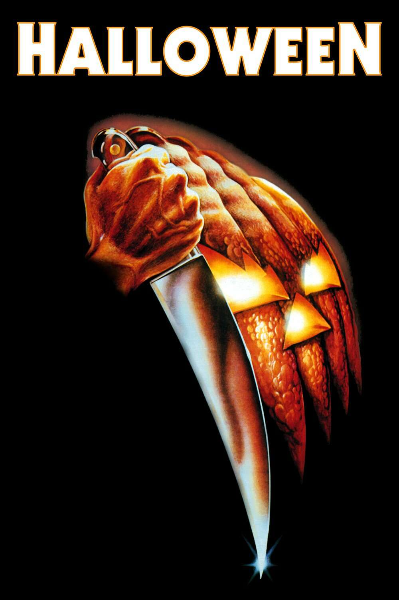

Horror cinema has been a defining force in the evolution of film, capturing audiences with its ability to provoke fear, suspense, and introspection. The genre is as diverse as the fears it explores, ranging from supernatural terrors to psychological mind games. Here, we delve into the top 10 horror films of all time, examining their impact, themes, and enduring legacies.
Widely regarded as the scariest film ever made, The Exorcist tells the harrowing tale of a young girl possessed by a demonic entity. Directed by William Friedkin, the film broke boundaries with its realistic portrayal of supernatural horror and its exploration of faith, guilt, and the battle between good and evil. Its groundbreaking special effects and unnerving sound design remain influential to this day.

Alfred Hitchcock’s Psycho revolutionized horror with its focus on psychological terror and the shocking twist of its narrative. The iconic shower scene and the chilling performance of Anthony Perkins as Norman Bates redefined the genre, making audiences question the monsters that lurk within seemingly ordinary people.
Stanley Kubrick’s adaptation of Stephen King’s novel is a masterpiece of visual storytelling and atmospheric dread. The Shining captures the descent into madness as Jack Torrance, played by Jack Nicholson, succumbs to the sinister forces of the Overlook Hotel. Its haunting imagery and cryptic themes have sparked endless analysis and solidified its place as a horror classic.

John Carpenter’s Halloween is the quintessential slasher film, introducing the world to the relentless Michael Myers and the concept of the “final girl.” Its minimalist score, innovative use of POV shots, and suburban setting created a blueprint for the slasher genre, inspiring countless films while retaining its own timeless terror.
Ari Aster’s Hereditary is a modern horror masterpiece, exploring grief, family trauma, and the inevitability of fate. Toni Collette’s riveting performance as a grieving mother anchors the film’s emotional depth, while its shocking moments and unsettling imagery leave an indelible mark on viewers. It is a reminder that horror can be both cerebral and deeply disturbing.

Ari Aster’s Midsommar (2019) is a singular entry in modern horror, subverting traditional tropes by setting its terrifying narrative in broad daylight. Unlike the shadows and darkness typical of the genre, Midsommar crafts its dread through unsettling contrasts: a sun-drenched Swedish countryside becomes the stage for a harrowing exploration of grief, codependency, and cultural dissonance.

Tobe Hooper’s The Texas Chain Saw Massacre is a visceral, unrelenting experience that captures the primal fear of survival. Its raw aesthetic and portrayal of a deranged family set a new standard for horror realism. Despite its brutal reputation, the film leaves much of its violence to the imagination, making it all the more horrifying.

Wes Craven’s A Nightmare on Elm Street introduced one of horror’s most iconic villains, Freddy Krueger, and the terrifying concept of nightmares becoming reality. The film’s inventive kills, surreal imagery, and exploration of fear made it a cultural phenomenon, solidifying its place in the pantheon of horror legends.
John Carpenter’s The Thing is a masterclass in paranoia and practical effects. Set in the isolation of Antarctica, the film follows a group of researchers as they confront a shape-shifting alien that can mimic any life form. Its suspenseful narrative and groundbreaking creature effects make it one of the most enduring sci-fi horror films.

Roman Polanski’s Rosemary’s Baby is a slow-burn horror masterpiece that delves into themes of betrayal, paranoia, and the loss of bodily autonomy. Mia Farrow’s vulnerable performance as Rosemary creates a deeply empathetic character, while the film’s subtle, creeping dread builds to a chilling conclusion that lingers in the viewer’s mind.

The films on this list represent the pinnacle of horror cinema, each contributing to the genre in unique and profound ways. They explore universal fears, challenge societal norms, and push the boundaries of storytelling and filmmaking. From the supernatural terrors of The Exorcist to the psychological horror of Psycho and the innovative social commentary of Get Out, these films showcase the enduring power of horror to captivate, unsettle, and provoke thought. Whether through haunting imagery, unforgettable performances, or groundbreaking techniques, these movies continue to define what makes horror such a vital and timeless genre.